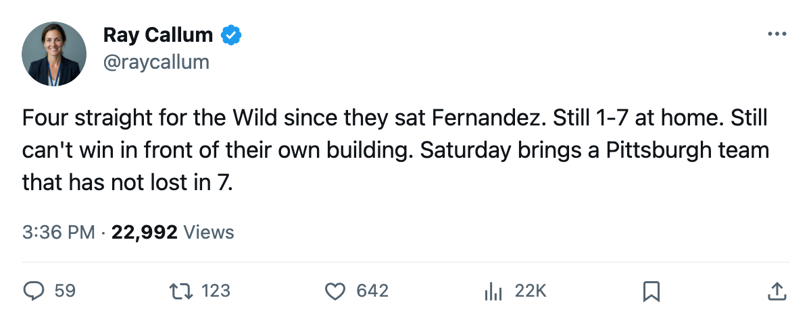

Goalie Watch: Minnesota Put Pelletier in the Crease, and the Wild Have Won 4 Straight
Jean-Marc Pelletier replaced Manny Fernandez as G1. The Wild's losing streak is over, and they face Pittsburgh's 7-game run on Saturday.
 Ray CallumSenior correspondent · Home Ice Network
Ray CallumSenior correspondent · Home Ice Network
The last edition noted that  Minnesota Wild had gone 6 games without a win and turned their crease. Four games later the winning streak is live:
Minnesota Wild had gone 6 games without a win and turned their crease. Four games later the winning streak is live:  Jean-Marc Pelletier79 took the G1 job from
Jean-Marc Pelletier79 took the G1 job from  Manny Fernandez92, and the Wild have won 4 in a row.
Manny Fernandez92, and the Wild have won 4 in a row.
The change happened in the lineup notes between the previous editions. Pelletier moved from backup to starter. Fernandez, who had already been on the injured list twice this season with unnamed ailments, dropped from the roster entirely. Johan Holmqvist72 came in as the new G2.
What changed on the ice
Minnesota Wild are 4-7-3 through 16 games, 15 points, 9th in the West. The record is still ugly. But 4 points from the last 2 games (a 4-2 win at  St. Louis Blues on November 9, a 3-2 win at
St. Louis Blues on November 9, a 3-2 win at  Mighty Ducks of Anaheim on November 10) mean the slide is broken and the club is alive in the conference race, 2 points behind 8th-place
Mighty Ducks of Anaheim on November 10) mean the slide is broken and the club is alive in the conference race, 2 points behind 8th-place  Calgary Flames.
Calgary Flames.
The problem is the building. The Wild are 1-7 at home this season. They are 5-3 on the road. All four wins in the streak came away from Minneapolis. They now host  Pittsburgh Penguins on November 14, the Penguins and their 7-game streak and their goaltender who has not taken a night off.
Pittsburgh Penguins on November 14, the Penguins and their 7-game streak and their goaltender who has not taken a night off.
The missing pieces
 Saku Koivu84 (shoulder) is out until November 29.
Saku Koivu84 (shoulder) is out until November 29.  Bill Muckalt73 (hand) is out until November 19. The Wild have 12 injury spells and 68 days lost, tied for 8th in the league. Without Koivu, the first line has no center who can drive possession.
Bill Muckalt73 (hand) is out until November 19. The Wild have 12 injury spells and 68 days lost, tied for 8th in the league. Without Koivu, the first line has no center who can drive possession.
The matchup against Pittsburgh is a first meeting this season. The Penguins carry 16 injury spells and 117 days lost; the Wild carry 12 and 68. Neither club is healthy.
Hedberg starts 14 straight for Pittsburgh. Pelletier has played 4 this season.
